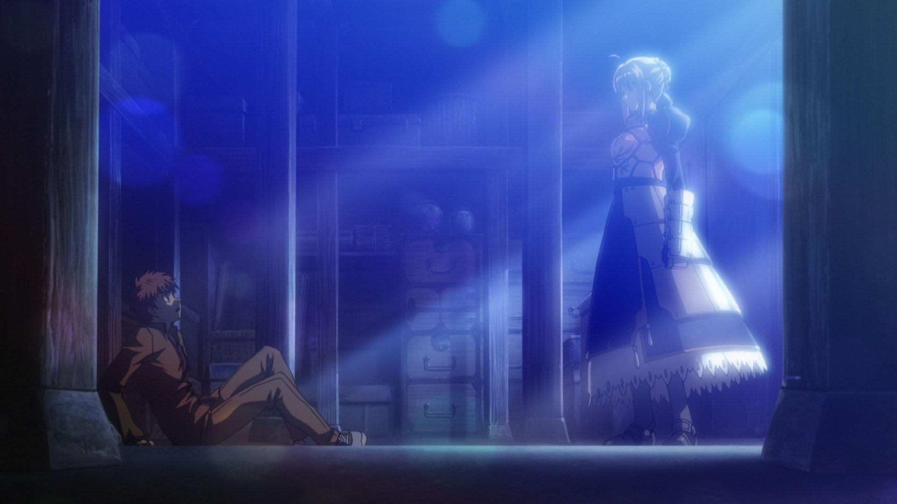
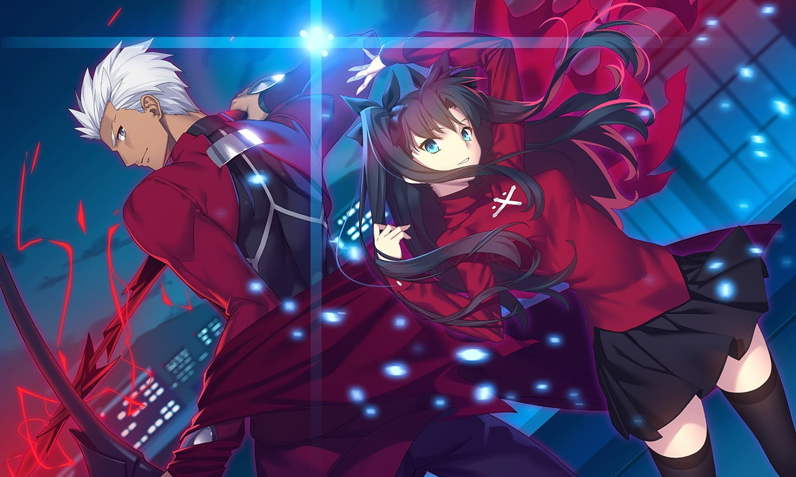
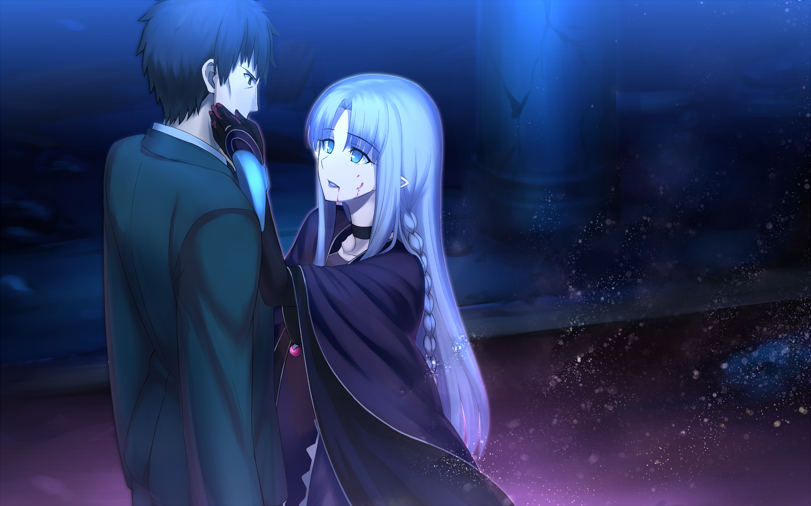
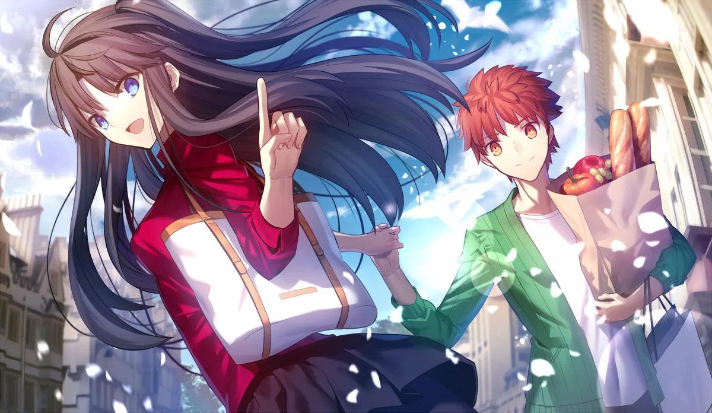

A história gira em torno de Shirou Emiya, um adolescente trabalhador e honesto que involuntariamente entra na quinta iteração de uma batalha real até a morte chamada Guerra do Santo Graal, onde combatentes lutam com magia e heróis ao longo da história por uma chance de ter seus desejos atendidos. . Órfão e o único sobrevivente de um grande incêndio na cidade de Fuyuki quando criança, Shirou foi levado por um mago aposentado chamado Kiritsugu Emiya, que morreu alguns anos depois. Os sentimentos de responsabilidade de Shirou por aqueles que morreram e sua própria salvação através de seu pai formaram um forte desejo de justiça e paz nele. Assim, ele treina seriamente seu corpo e habilidade minúscula com magia com o objetivo de ajudar os outros, mesmo que as pessoas muitas vezes abusem de sua generosidade. Uma noite, Shirou inesperadamente encontra dois guerreiros, Archer e Lancer, lutando em sua escola. Ele é atacado e quase morto por Lancer, mas o mestre de Archer, Rin Tohsaka consegue revivê-lo pouco antes da morte. No entanto, Lancer ataca novamente, e pouco antes de Shirou estar prestes a ser morto, ele acidentalmente convoca seu servo, Saber, que salva sua vida. Com esta convocação, as marcas do Selo de Comando aparecem na mão de Shirou, formalizando sua entrada como Mestre na Guerra do Santo Graal.
Como Saber força Lancer a fugir, ela se envolve em combate com Archer, mas Shirou acidentalmente a impede com sua magia ao ver Rin, seu colega de escola. Shirou e Rin decidem formar uma aliança para lutar contra outros magos. Através do padre Kirei Kotomine, Shirou aprende sobre o contexto da Guerra do Santo Graal. Embora inicialmente hesitante, ele decide participar para evitar que futuras catástrofes aconteçam como resultado de desejos concedidos pelo Santo Graal.
À medida que a guerra continua, Shirou começa a desenvolver suas próprias habilidades como mago imitando as habilidades de Archer, e Rin observa semelhanças impressionantes entre os dois. No entanto, em uma batalha contra o servo Caster na tentativa de resgatar seu guardião Fujimura, Shirou perde o controle de Saber, que é preso por Caster. Shirou promete lutar com sua própria força mágica para parar a guerra e salvar seus amigos. Archer trai Rin durante uma luta contra Caster, mas Rin reforma sua aliança com Shirou. Com a ajuda de Lancer, a dupla consegue libertar Saber de Caster, que é morto.
Para ganhar mais aliados, Rin e Shirou decidem se unir a Illyasviel von Einzbern e seu servo Berserker. No entanto, Gilgamesh, ex-servo de Kotomine, chega e mata Illya e Berserker antes que Rin e Shirou possam detê-lo. Na vila de Illya, Archer desafia Shirou para uma luta, na esperança de destruir os objetivos de Shirou de ser um herói. Confuso, Saber exige saber quais são suas verdadeiras intenções, e Archer revela ser uma versão de Shirou do futuro, que se tornou um espírito heróico depois de se desiludir com o caminho que tomou. No entanto, Shirou aceita seu futuro, independentemente dos arrependimentos de Archer, decidindo manter os ideais de Kiritsugu de ser um herói. Gilgamesh tenta matar Archer e Shirou, mas o primeiro se sacrifica para proteger o último. Gilgamesh toma o coração de Illya, planejando usar seu outro mestre Shinji Matou para invocar o Santo Graal corrompido. A fim de seguir as esperanças de Archer, Rin passa a Shirou sua mana para lutar contra Gilgamesh para replicar os poderes de Archer. Como Shirou quase mata Gilgamesh, Archer usa o último de sua força para entregar o ataque final ao inimigo enquanto ajuda Saber para destruir o Santo Graal. Com a guerra concluída e os servos desaparecidos, Shirou e Rin se mudam para Londres para aprender mais sobre magia, e Shirou promete mais uma vez manter os ideais de Kiritsugu.
